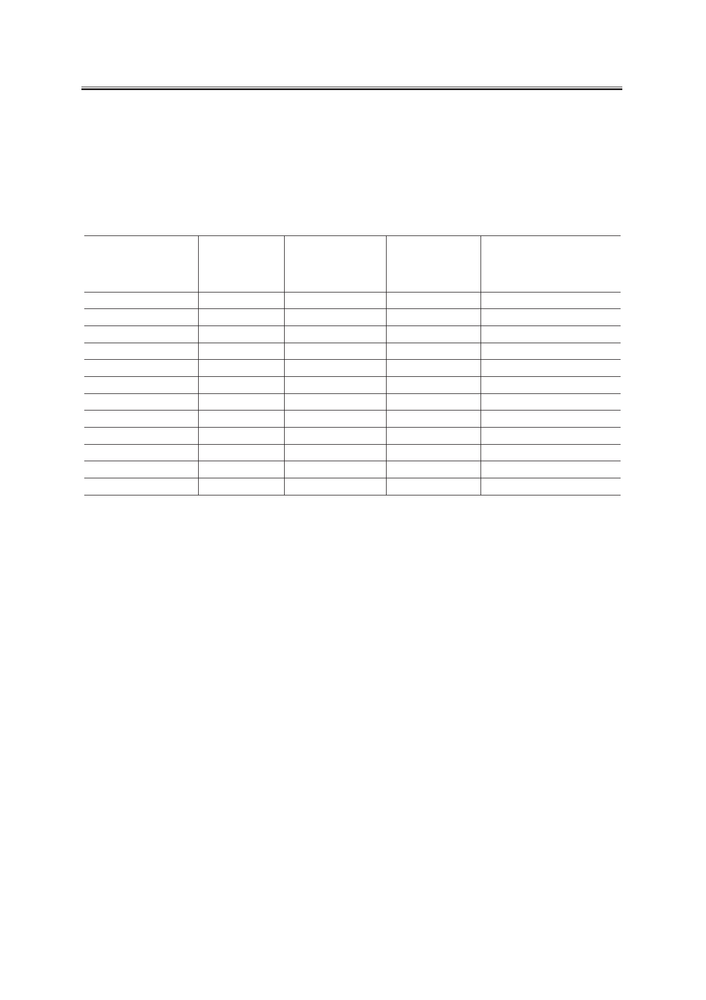

Личный кабинет как элемент информационной системы статистики образования
ганизаций общего образования, среднего профессионального и высшего образования.
Основные характеристики форм статистической отчетности в рамках Федерального ста-
тистического наблюдения сферы образования представлены в табл. 2. Личные кабинеты
образовательных организаций в зависимости от уровня образования организованы в раз-
личных разделах веб-сайта ГИВЦ по адресу www.miccedu.ru.
Таблица 2. Характеристики форм Федерального статистического наблюдения
Форма ФСН
№ ОО-1
№ ОО-2
№ 1-ОД
№ 1-ДО
№ 1-ДО (сводная)
№ Д-13
№ 1-НД
№ 103-РИК
№ ВПО-1
№ СПО-1
№ ВПО-2
№ СПО-2
Число разделов
74
17
10
12
19
18
2
5
28
26
17
16
Число показателей
26973
928
721
902
4499
2838
560
1162
5855
6265
1617
1617
Число формул
арифметического
и логического
контроля
16282
398
329
428
3571
2369
428
1167
более 1500
более 1500
более 500
более 500
Число единиц наблюдения
(образовательных
организаций)
47590
42248
2
209
85
85
85
85
1658
5010
1607
4077
Сбор статистической информации начинается по письмам Министерства образования и
науки РФ об открытии сбора данных. После заполнения и обработки образовательной органи-
зацией отчетов по формам ФСН происходит загрузка файлов с данными отчетов в личные ка-
бинеты. На этапе сбора и верификации при пообъектном учете статистическую информацию
предоставляют только образовательные организации. Все отличные от них типы пользова-
телей осуществляют контроль за достоверностью и своевременностью предоставления
статистических данных по всем объектам наблюдения, относящимся к их территории.
Шаблон формы предоставляется в зависимости от уровня образования и формы ФСН
для каждой образовательной организации либо в формате электронных таблиц Microsoft
Excel, либо в форме специализированного программного обеспечения для заполнения и
предварительного контроля вносимых сведений. Шаблон может быть получен в личном
кабинете информационной системы.
После заполнения документа пользователь загружает его на сервер через личный ка-
бинет информационной системы в формате, определяемом письмом Минобрнауки России,
согласно порядку предоставления сведений, уникальному для каждого уровня образова-
ния, и получает отчет о проверке документа по формулам логического и арифметического
контроля, которые встроены в информационную систему на всем пути прохождения стати-
стической информации. Одновременно с заполнением электронной версии образователь-
ная организация распечатывает печатную версию отчета по форме ФСН, которая сначала
сверяется с электронной версией, а в последующем - хранится в ГИВЦ.
Помимо функции личного кабинета как окна, через которое производится загрузка
форм статистической отчетности и их заполнение, он является инструментом, с помо-
10
Российский технологический журнал 2017 Том 5 № 5